참고
“E0022 내부모듈간 통신이상”이 발생하면 시스템보드가 통신을 재개한다고 해도 메인보드는 시스템보드와 통신을 재개하지 않습니다. 제어기를 재부팅해야만 통신이 재개됩니다.
1.1.6.1. 개요
제어기의 내부 모듈들은 CAN통신을 사용하여 데이터를 주고 받습니다. E0022는 메인보드가 내부모듈 중 시스템보드 간의 CAN통신 상에 이상을 감지할 때 나타나는 에러 코드입니다. 같은 CAN통신 선로를 사용하지만 사용자용 보드(BD58x)에 대해서는 E0032의 에러로 나타납니다.
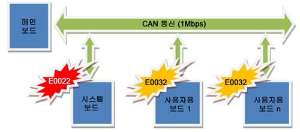
그림 1.21 Hi5a제어기의 CAN통신 구성
시스템보드는 제어기의 전원시퀀스의 입출력을 통제하는 모듈로서 한 번 이 에러가 발생하면 이와 관련된 모든 기능이 정지되며 메인보드는 CAN통신을 중단합니다. 따라서 모든 기능을 정상적으로 되살리기 위해서는 제어기 전원을 재투입해야 합니다.
1.1.6.2. 원인 및 점검방법
|
(1) 일반점검 n CAN통신케이블 접속상태를 확인하십시오. n 전원상태 (전원전압 또는 케이블 접속상태)를 확인하십시오.
(2) 제어기 전원 재부팅 후에도 에러가 계속 발생되고 있는 경우 n 시스템보드의 고장상태를 확인하십시오. n 고장부품을 교체하여 확인하십시오(메인보드, 시스템보드, 케이블).
(3) 제어기 정상가동 중에 발생하는 경우 n 주위 환경의 변화를 관찰하십시오. n CAN 통신라인을 점검하십시오. Ø 사용자용 모듈의 CAN통신용 커넥터를 점검하십시오. Ø 종단저항 연결을 점검하십시오 Ø 배선구조를 점검하십시오. Ø 통신케이블이 트위스트 라인을 사용하고 있는지 점검하십시오. |
(1) 일반점검
정상적으로 시스템이 가동하는 중에 이 에러가 발생했다면 가장 먼저 다음을 점검하십시오.
|
|
참고 “E0022 내부모듈간 통신이상”이 발생하면 시스템보드가 통신을 재개한다고 해도 메인보드는 시스템보드와 통신을 재개하지 않습니다. 제어기를 재부팅해야만 통신이 재개됩니다. |
n CAN통신케이블 접속상태를 확인하십시오.
메인보드와 시스템보드간의 CAN케이블이 잘 접속되었는지 확인하십시오. 커넥터의 접촉불량일 수 있으므로 메인보드의 CAN커넥터와 시스템보드의 CAN커넥터를 탈착하고 에러발생 여부를 다시 확인하십시오.
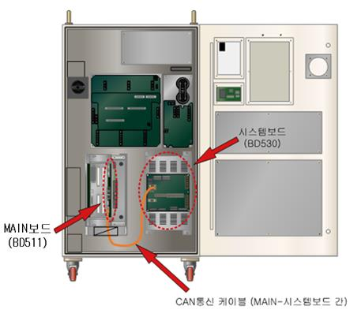
그림 1.22 메인보드(BD510)와 시스템보드(BD530)의 CAN통신케이블 연결
n 전원상태 (전원전압 또는 케이블 접속상태)를 확인하십시오.
시스템보드에 DC 5V 제어전원이 정상적으로 공급되는지를 확인하십시오. 전원에 이상이 있을 경우 시스템보드의 동작이 안되므로 이 에러가 발생할 수 있습니다. 우선은 간단한 방법으로 전원입력 여부를 확인하십시오. 다음 그림과 같이 시스템보드의 좌측 상단에 DC 5V 전압을 나타내는 발광다이오드(LED) CNP1과 보드동작상태를 나타내는 7-세그먼트 (7-SEG)가 있습니다.
표 1-2 시스템보드 인가전압 정상여부 확인방법
|
구분 |
발광다이오드(LED) CNP1 |
7-세그먼트 7-SEG |
결과 |
|
1 |
소등 |
소등 |
시스템보드에 전원이 정상적으로 인가되지 못하고 있습니다. SMPS, 케이블, 커넥터접속 등의 전원관련 점검을 하십시오. |
|
2 |
점등 |
소등 |
시스템보드의 뒤쪽에 있는 IO관련 보드(BD531)에 전원이 인가되지 않거나 고장입니다. |
|
3 |
점등 |
점등 |
전원전압을 확인하십시오. |
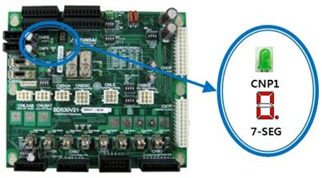
그림 1.23 시스템보드(BD530)의 DC 5V전원용 LED CNP1
상기의 표와 같이 발광다이오드(LED) CNP1과 7-세그먼트 (7-SEGDC)이 모두 점등된 상태라면 보드에 인가되고 있는 DC 5V 제어전원 전압이 5.0V~5.3V 영역 이내에 있는지 확인하십시오. 전압이 이 영역 외의 범위에 있다면 통신에 영향을 줄 수 있습니다. 점검위치는 다음 그림과 같으며 만약 범위 밖에 있다면 SMPS에서 전압을 5.0V~5.3V 영역으로 조정하십시오.
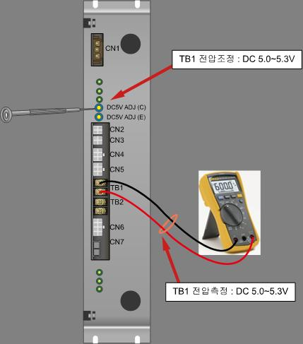
그림 1.24 DC 5V전원 전압측정 및 조정방법
(2) 제어기 전원 재부팅 후에도 에러가 계속 발생되고 있는 경우
제어기 전원을 재부팅한 상태에서도 에러가 이미 발생되고 있어서 에러메시지가 나타난 경우에는 몇 가지의 점검을 통하여 고장부위를 판단할 수 있습니다.
|
|
참고 이 점검은 사용자용 모듈(BD58x)을 사용하고 있다면 이 모듈에 연결되는 CAN케이블을 제거한 후 실시하십시오. 다른 영향요소를 제거하기 위한 방법입니다. 만약 사용자용 모듈의 케이블을 제거한 후 제어기를 재부팅해서 이 에러가 발생하지 않는다면 사용자용 모듈과 관련해서 에러의 원인을 찾아야 합니다. 이것은 다음 절을 참고하십시오. |
제어기의 구성환경에서 사용자용 모듈의 CAN통신을 제거하려면 다음 그림과 같이 시스템보드의 CAN2 및 CANS2 커넥터를 빼십시오. 제어기를 재부팅하면 메인보드와 시스템 보드만이 CAN통신을 유지할 것입니다.
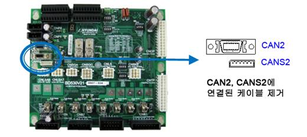
그림 1.25 사용자용 모듈(BD58x) CAN통신 연결 제거 방법
n 시스템보드의 고장상태를 확인하십시오.
시스템보드에는 각종 상태를 나타낼 수 있는 표시장치(7-세그먼트)가 있습니다. 표시상태를 보고 시스템보드의 고장인지 판단할 수 있습니다. 제어기 전원을 재부팅하였을 때의 표시내용이 다음과 같이 순환적으로 표시되지 않을 경우 시스템보드 고장이므로 교체하십시오.
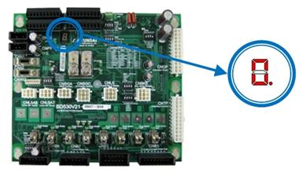
그림 1.26 시스템보드(BD530)의 7-세그먼트 위치
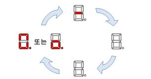
그림 1.27 재부팅시 시스템보드의 정상적인 7-세그먼트 표시내용
n 고장부품을 교체하여 확인하십시오.
이상과 같은 체크에도 불구하고 고장의 원인을 발견할 수 없다면 이 에러와 관련된 부품들을 교체 확인해야 합니다. 보드 내부의 CAN통신과 관련된 회로의 고장일 수 있으며 이러한 고장은 외부에서 확인하는 것이 어렵기 때문입니다. 이 부품들은 아래 그림과 같이 시스템보드(BD530), 메인보드(BD510), 케이블의 3가지가 있습니다. (기존에 메인보드와 기타 옵션모듈(BD58x)은 CAN통신을 유지하고 있었다면 메인보드와 케이블은 고장이 아닐 수 있습니다. 이때에는 시스템보드만 교체해 보면 됩니다.)
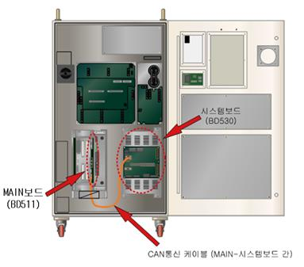
그림 1.28 메인보드(BD510)와 CAN통신케이블의 위치
(3) 제어기 정상가동 중에 발생하는 경우
n 주위 환경의 변화를 관찰하십시오.
현장상황에 변화가 있었는지를 살펴보아야 합니다. 기존에 없었던 대전력용 장치를 운용하기 시작했는지 확인하십시오. 전력의 품질과 접지상태의 불량은 통신계통에 영향을 주며 이 에러를 발생시킬 수 있습니다.
n CAN 통신라인을 점검하십시오.
CAN통신선로에는 시스템보드와 함께 사용자용 모듈(BD58x)이 연결되어 있을 수 있으며 이로 인해 선로의 물성적 영향으로 인해 에러가 발생할 수 있습니다. 따라서 사용자용 모듈을 사용하고 있다면 다음의 점검들을 수행하십시오.
Ø 사용자용 모듈의 CAN통신용 커넥터를 점검하십시오.
메인보드와의 데이터 통신은 반 이중(half duplex)방식의 CAN을 이용합니다. 제어기 하부 모듈들은 모두 CAN 데이터 통신을 이용한 데이지체인(daisy chain)으로 구성되어 있습니다. 따라서 보드에는 CANS1, CANS2로 표시된 2개의 CAN커넥터가 있습니다. 이의 연결이 올바른지 확인하십시오.
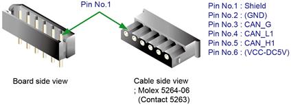
그림 1.29 사용자용 모듈의 CAN 커넥터 CANS1, CANS2
표 1-3 사용자용 모듈의 CAN 커넥터 핀 배치
|
번호 |
명칭 |
용도 |
|
1 |
Shield |
CAN 케이블의 차폐(shield)선을 연결합니다. |
|
2 |
(DC5V GND) |
보드전원 DC5V그라운드(ground)를 연결합니다. (CNP1을 통한 연결을 권장합니다.) |
|
3 |
CAN_G |
CAN통신용 그라운드(ground)를 연결합니다. |
|
4 |
CAN_L1 |
CAN통신의 L신호를 연결합니다. |
|
5 |
CAN_H1 |
CAN통신의 H신호를 연결합니다. |
|
6 |
(DC5V) |
보드전원 DC5V를 연결합니다. (CNP1을 통한 연결을 권장합니다.) |
Ø 종단저항 연결을 점검하십시오.
여러 개의 보드를 연결할 경우에는 종단저항 처리를 정확히 하여야 합니다. CAN 데이터 통신은 데이지 체인방식을 이용합니다. 따라서 마지막으로 CAN 통신케이블을 연결하는 보드에만 종단저항이 연결되어 있어야 하며, 중간에 있는 보드는 종단저항을 연결하면 안됩니다. 종단저항의 연결은 보드의 CANS1와 CANS2 커넥터 옆에 JP1점퍼를 이용합니다. JP1을 쇼트시키면 종단저항이 연결된 것이며, 오픈시키면 종단저항 연결을 제거하는 것입니다. 다음 그림을 참조하십시오.
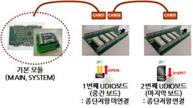
그림 1.30 CAN통신선로의 종단저항 연결방법
Ø 통신케이블이 트위스트 라인을 사용하고 있는지 점검하십시오.
CAN통신은 외부 노이즈에 대한 통신품질을 높이기 위해 트위스트 페어(twist pair) 배선을 사용합니다. CAN_H1과 CAN_L1 신호선이 서로 트위스트 되어야 합니다. (그림 6.36 참조)
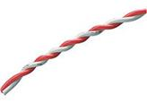
그림 1.31 트위스트 페어(twist pair)의 예
Ø Small Door를 사용하는 제어기일 경우 배선구조를 점검하십시오.
CAN통신 배선은 가지배선을 가지면 안됩니다. 모든 연결은 한 모듈에서 다음 모듈로 직렬연결하여야 합니다. 다음 그림은 잘못된 배선구조를 나타낸 것입니다.
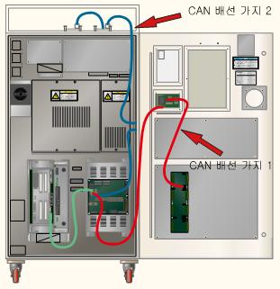
그림 1.32 잘못된 CAN통신 배선구조 (Small Door 사용 Hi5a-N제어기의 경우)
그림에서 시스템보드를 시작으로 CAN통신선로는 2개의 가지를 가지고 있습니다.
n 가지 1:
시스템보드 CAN2 커넥터 → 스몰도어(Small Door)보드 → 제어기 문의 DIO보드
n 가지 2:
시스템보드 CNAS2 커넥터 → 제어기측면의 아날로그보드 → 제어기 상단의 DI보드들
이는 통신품질에 악영향을 끼칠 수 있으므로 다음과 같은 배선구조로 조정하십시오.
n 가지 1:
시스템보드 CAN2 커넥터 → 스몰도어(Small Door)보드 → 제어기 문의 DIO보드 → 제어기측면의 아날로그보드 → 제어기 상단의 DIO보드
n 가지 2: 제거됨.
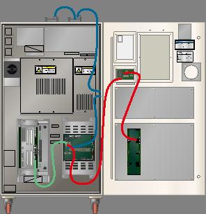
그림 1.33 올바른 CAN통신 배선구조 (Small Door 사용 Hi5a-N제어기의 경우)
만약 제어기 문에 사용되는 사용자용 모듈이 없다면 다음 그림과 같이 시스템보드에서 스몰도어 보드로 연결되는 CAN케이블 자체를 제거하십시오. 또한 모듈간의 케이블을 최단거리로 배선하는 것으로 통신품질을 향상시킬 수 있습니다.
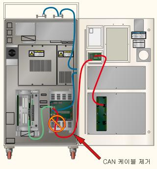
그림 1.34 사용하지 않는 CAN통신케이블의 제거 (Small Door 사용 Hi5a-N제어기의 경우)